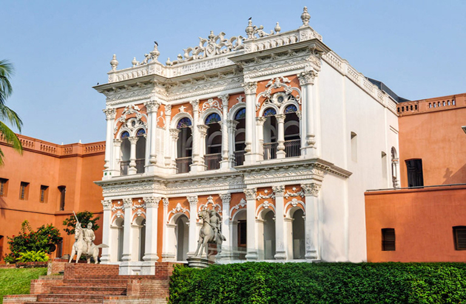
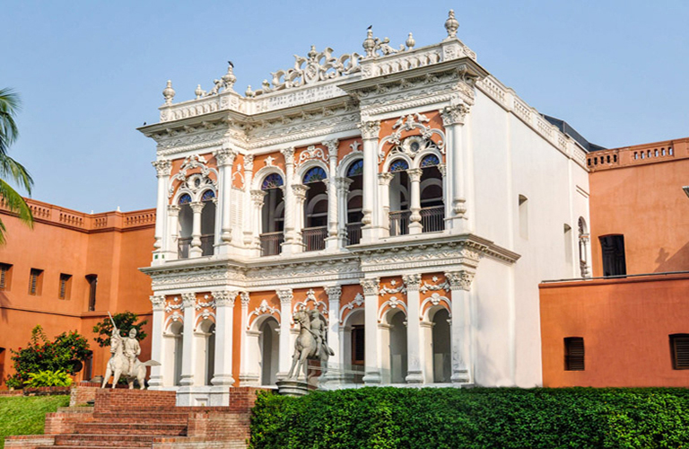
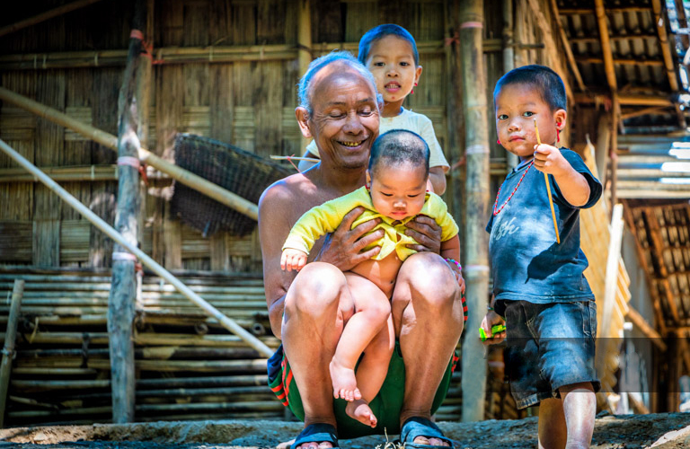
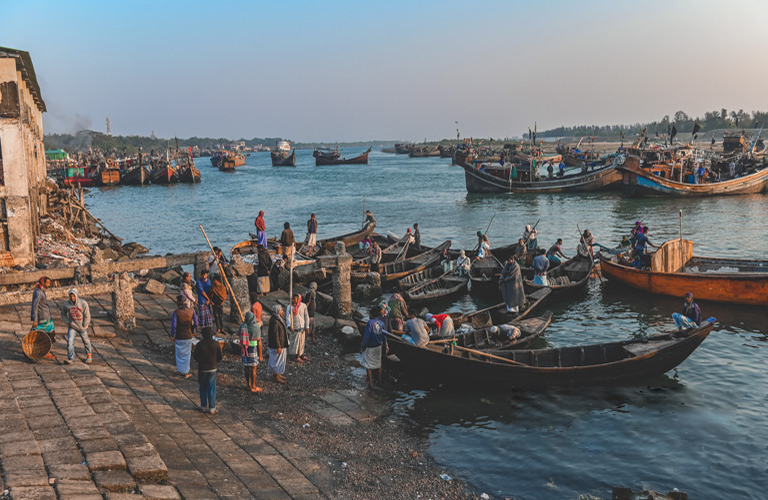

1. Dhaka City & Around
2. Sonargaon and Panam City
3. Mawa and Padma Rive Side
Embark on an enthalling photography tour of Dhaka, One of the most densdely populated ciites in the world, allowing you to capture the
city's hustle and bustle through your lens. You will find interesting subjects to shoot here every moment. It is one of the best places on earch
for steet photographoy. Unlike elsewhere, people here willingly pose for photos without asking money. In Dhaka Photography Tour,
we'll take you to some bustling backstreets, bazaars, river ports, shipyards, and a train station in New and Old Dhak,
looking for the perfect subjects to Photograph. Regardless of your photography experiecne or equipment, this tour will provide unforgettable
momnets to capture and keep forever.
 

4. Barisal - Water & Rural People
5. Sundarban - The Mangrove Forest
6. Bagerhat & Sundarban
Barisal, sounthern Bangladesh, is filled with dozens of rievrs and channels that make the Ganges Delta, resulting in a luch landscape.
You will visit the floating markets, bazaars, villages, brick kilns, and schools beyond the reach of the guidebooks. You'll be greeted warmly
by locals and have an authentic expericen that is hard to find in other parts of the world. In additing, in our Bagerhat and Sundarban Tour, you
will explore the Sundarban Mangrove Forest, Spot the Bengal tigers, spotted deer, river dolpins, wild boars, clawless otters, monkeys,
saltwater crocodiles and othe wildlife and brids in their natural habitat. Immerse in the beauty of the most significant mosques
and a splendid Hindu Temple in Bagerhat.
7. Best of Rajshashi
8. Discover North Bengal - Kantajew Temple
Immerse in Rajshahi region's rich histoyr and vibrant culture on our Best of Rajshashi Tour. Explore the temple-studded viallage of Puthia and the
medieval Bagha and Kusumba Mosque, exhibiting terracotta and stone, craftsmaship. Marvet at the grandeur of the 8th-century Somapura Mahavihara
in paharpur, a UNESCO World Heritage site. Visit a Santhal tribal village to experience indigenous lifestyle. Also, explore the enchanting beauty of
some of Bangladeshi's hidden gems on an unforgettable day tour to Dinajpur and Saidpur. Marvel at the Kantajew Temple, every inch wrapped
in stunning terracota describing epic Hindu sotries. And Historic Nayabad Mosque and Chini Mosque. Experience award-winning sustainbale
architecture at a school in a remove village and visit a train station to witness rural life.
9. Sreemangal Leisure Tour
10. Discovering Sylhet
11. Enchaning Hawor - Life in Water
Sreemangal the tea capital of Bangladesh, offers a scenic and delightful experience. This hilly region boats endlsss tea plantation and enchaning
forests, making one of the country's most picturesque destinations. Trek through Lawachhara National Park, where you may spot the endandered
Western Hoolock Gibbons. Explore remove villages inhabited by different tribes, and experience their unique lifestyles. Also experience stone-collecting
activites in Jaflong, ride a boat on the blue-water canal Lalakhal nad visit Shahjalal's shrine in Sylhet. Taste the signature 7 layer tea, and wonder
in the vibrant tribal handicraft market of the Manipuri tribe. In the addition, in our Hawor tour, you will find and enjoy remarkable beauty of Nature
with Water, Hill, Sunset, Sunrise and thousands species of brids especially ducks. You will experience extraordinary lifestlye of
native people that you will not find any other part in the world.
12. Chittagong Hill Tracks
13. Cox's Bazar & Saint-Martin
Chittagong Hill Tracts Tour will take you on a journye into the extraordinary landscape of the Chittagong Hill Tracks in Bangladesh, a land
known for it's hilly topographoy, contrasting the nation's usual plains. Home to deiver indigenous groups, this tour offer a rich tapestry of unique
cultlures and traditions. Your voyage will immerse you into the heart of tribal villages, showcasing daily life and customs and the vibrant tribal
bazaars, a sensory feast of sights, sounds, and aromas reflecting the local culture. Also, enjoy a tranquil boat ride on the scenic Kaptai Lake and
Sangu River, where the stunning vistas of lush gereenry, majestic hills, and serene waters encapsulate the region's enchanting spirit. See life
outside tourism by visiting the busy fishing ports of Chittagong and Cox's Bazaar. Visit the World War 2 Cemetery in Chittagong and enjoy
remove beaches in Cox's Bazar outside the tourists reach.
 